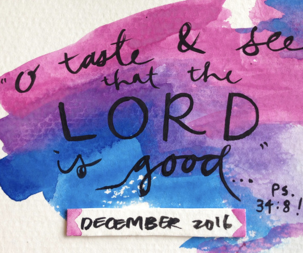

December Update

To stimulate another part of your brain and make things a little bit more “tangible,” we’ll show you how God has been so good to us…!
Valley Bible Church
So thankful for the time spent with sisters sharing food, burdens, and encouragements~
We celebrated Christ’s birth with the Youth & Young Adult groups!
The children’s ministry ended the year with Mason’s birthday and a Christmas performance!
In the Workplace
We don’t have too many photos related to work, but we are definitely being reminded over and over to praise God for the work He has provided for us. Even the luxury Ryan has to be studying something he’s never done before without also having to work full time is a tremendous blessing.
 Violin students from the class I assist for performing for the first time!
Violin students from the class I assist for performing for the first time!
Time with Family
We were sad to have missed spending time with Ryan’s dad & brothers in Washington, but so glad we have the opportunity to grow closer to my family AND! We were able to visit Ryan’s aunt’s family in SoCal, which was very fun and encouraging for us.
Strengthening Our Relationship
… with the Lord and each other as we prepare for marriage (also logistically: moving, wedding planning, etc.)!
Visited some holiday lights (that you can’t see)
We were able to talk to an older couple who counseled me during my time in college at a holiday party they hosted– a lot of biblical insight! Also reconnected with some old friends from my college fellowship group.
And! Just being able to enjoy God’s creation…
What we need prayer for:
- More love for Christ– to see more of His beauty and to be moved to live in accordance to His will for us and for the Church.
- With all the logistics of our wedding coming up and all that that affects, that we would remember what is truly important.
- Ryan’s computer programming causes, at times, frustration and discouragement. Prayer for perseverance and trust in the Lord.
- I had to take a trip to Georgia because my grandmother (mom’s side) was very sick and passed away. Prayer for my mom’s family, that they would find peace in the hope we have in Christ and for strength during this difficult time.
- Our continued studies about Cambodia’s history and language! Making it a priority!